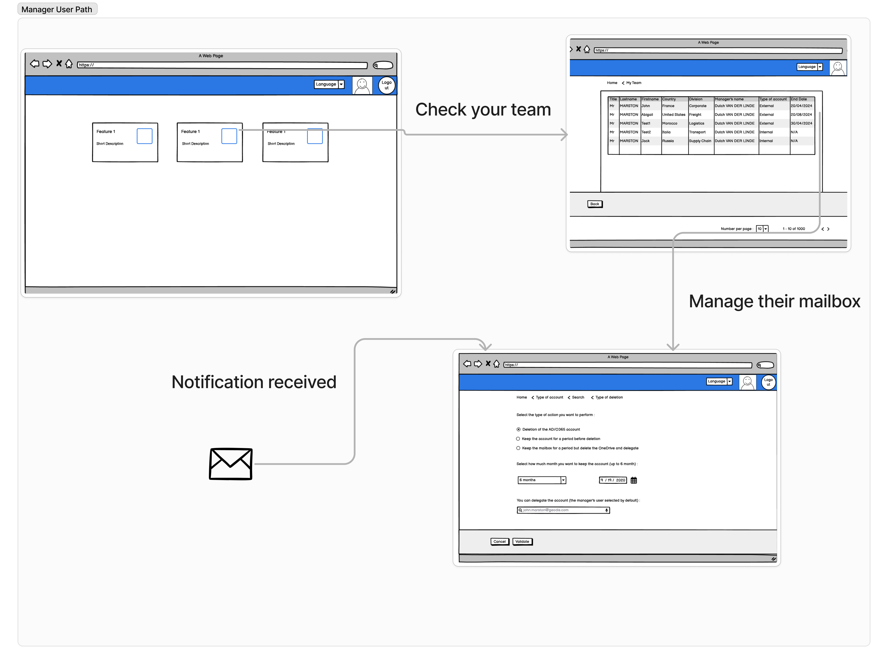
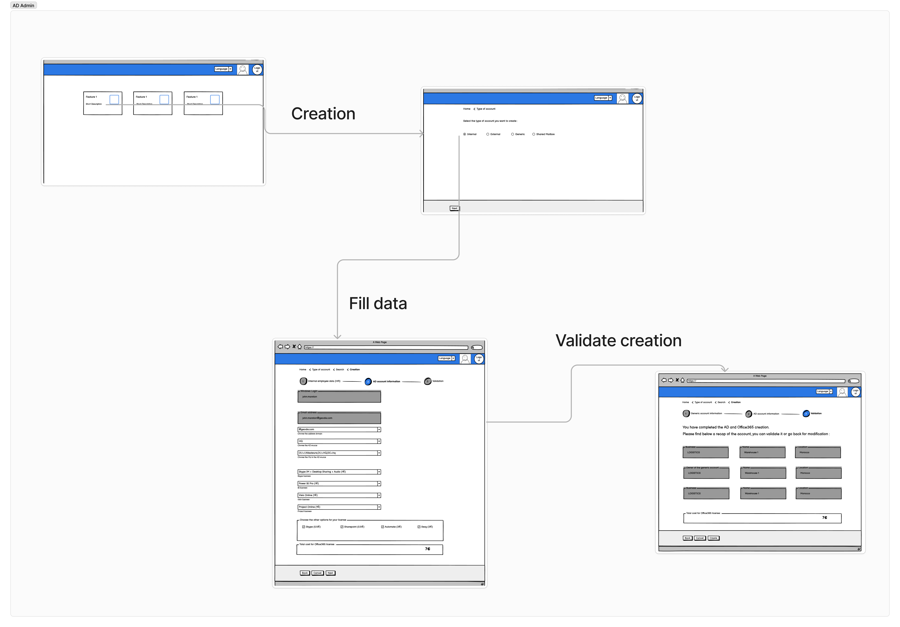

Office 365 – Provisioning automatisé
Centraliser la création de comptes à partir des données RH
Contexte & Enjeux
Chez GEODIS, la création de comptes IT et RH était dissociée, générant des erreurs fréquentes, des doublons et un surcoût en licences O365.
Chaque arrivée ou départ nécessitait une double saisie, chronophage pour les RH et sources d'erreurs pour les équipes IT.
Objectifs du projet
- ✅ Réduire les erreurs humaines
- ✅ Gagner du temps côté RH et IT
- ✅ Optimiser l’usage des licences Office 365
- ✅ Proposer une interface claire et unifiée
Mon rôle
En tant qu’UX Designer dédié, j’ai mené les interviews, co-animé les ateliers, réalisé les wireframes, prototypé les parcours, et assuré le lien avec les développeurs.
Mon expertise IT/RH m’a permis de mieux parler aux parties prenantes et de proposer une solution adaptée au terrain.
Processus UX
J’ai mené des entretiens utilisateurs avec RH, IT et managers locaux pour comprendre les parcours existants et identifier les irritants majeurs.
Des ateliers de co-conception ont permis d’imaginer une solution réaliste, compatible avec l’infrastructure IT existante.
Idéation & Prototypage
J’ai conçu des wireframes et un prototype haute fidélité sur Adobe XD.
Chaque écran a été pensé pour simplifier la tâche des RH, IT et managers, tout en respectant les contraintes de sécurité et conformité.
Voir le prototype Adobe XDMot de passe : Ghpa2020
Design final


Impact
- ✔️ Aucune erreur de saisie depuis la mise en service
- ✔️ Données à jour automatiquement entre RH et IT
- ✔️ Réduction des délais de traitement
- ✔️ Forte adoption par les RH locales
Témoignages
“Une révolution pour nos équipes” – Responsable IT
“Plus besoin de tout ressaisir manuellement, c’est un gain de temps énorme” – Assistante RH
À propos & mon rôle
J’ai rejoint GEODIS en tant qu’Analyste IAM et Designer UX entre 2018 et 2022. Ce projet a été une étape clé dans mon parcours :
- ✅ Débutant en UX : je venais de BoursoBank, mais c'était un autre domaine.
- ✅ Terrain inconnu : LDAP, AD, SIRH… un vrai terrain de découverte.
- ✅ Apprentissage continu : l'interconnexion IAM/RH nécessitait rigueur et itérations.
Le projet a démarré en mars 2020 et a été déployé progressivement jusqu’en 2026 dans le monde entier.
Problème
Les données O365 étaient mal synchronisées. Erreurs humaines, absence de contrôle, coûts inutiles. L’objectif : automatiser tout le provisioning à partir des données RH.
Enjeux & Contexte
Les processus manuels par mail généraient du stress, des oublis et une mauvaise traçabilité. L’objectif était de tout centraliser dans une interface unique.
Recherche utilisateur
- ✅ Entretiens RH & IT
- ✅ Ateliers de co-création
- ✅ Sondages internes
- ✅ Audit terrain
Personas
User Journey
Aziz – Admin AD
- 😡 Frustration : les données RH arrivent par mail, sans validation.
- ✅ Opportunité : intégration directe des données RH, alertes automatiques.
Processus de Design
 Fonctionnalités clés
- ✅ Création automatisée des comptes
- ✅ Alertes expirations
- ✅ Comptes partagés gérés
- ✅ Statistiques personnalisées
Mockups
Résultats
Processus plus rapide, taux d’erreur réduit de 97 %, satisfaction RH : +15 %, charge opérationnelle réduite.
Outils utilisés
- ✅ Hubspot / MakeMyPersona
- ✅ Balsamiq / Adobe XD / Photoshop
- ✅ ServiceNow / Teams / Whiteboard